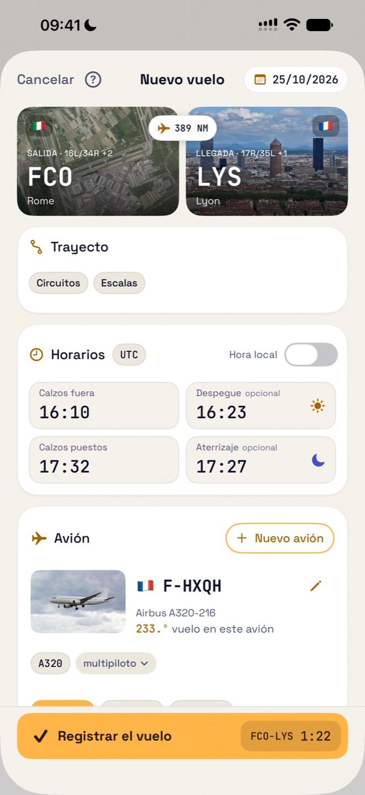
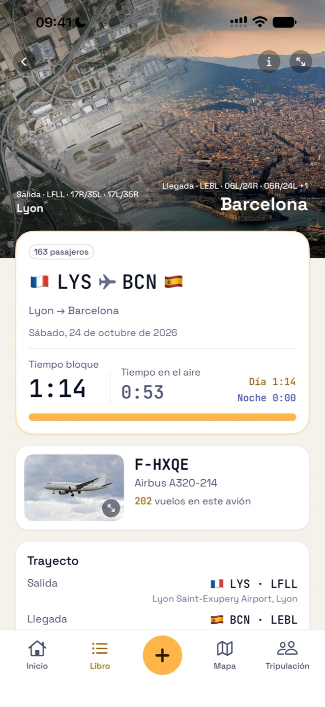
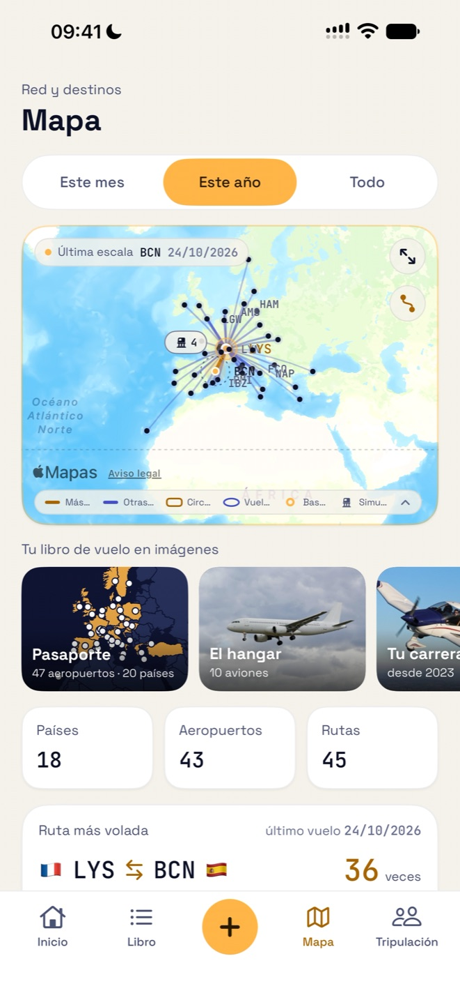
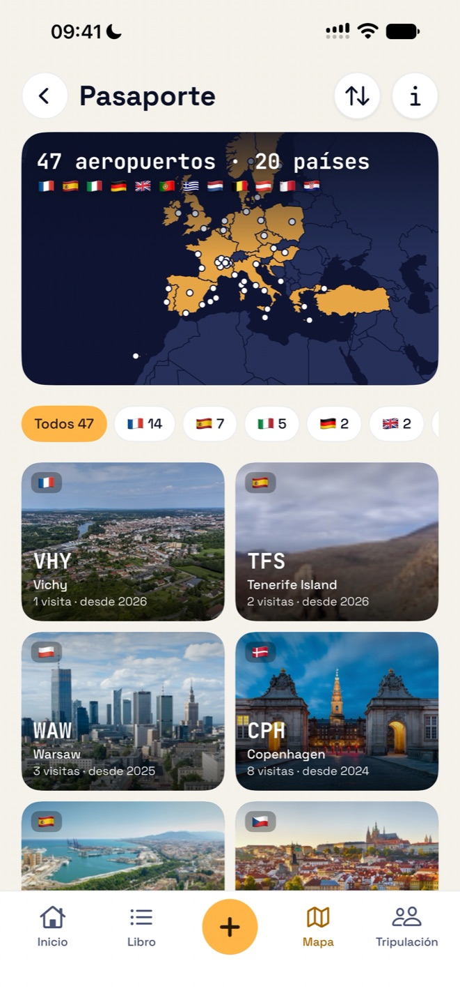
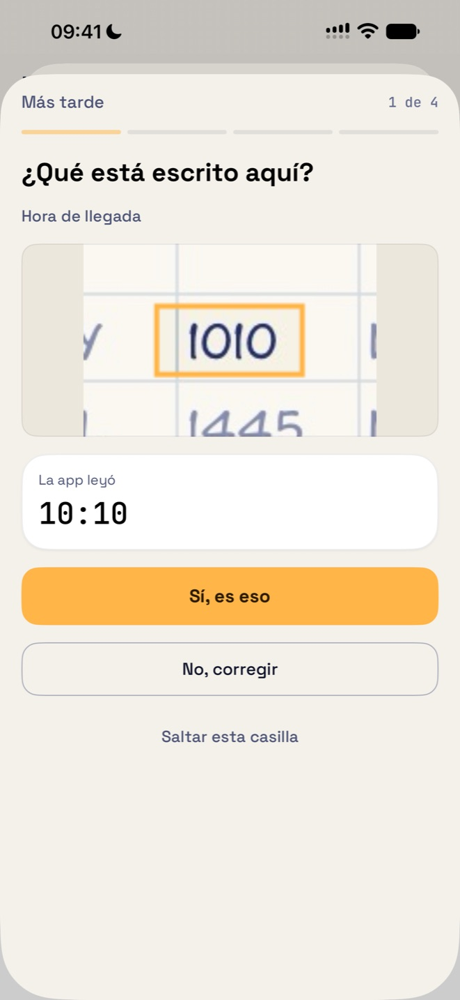
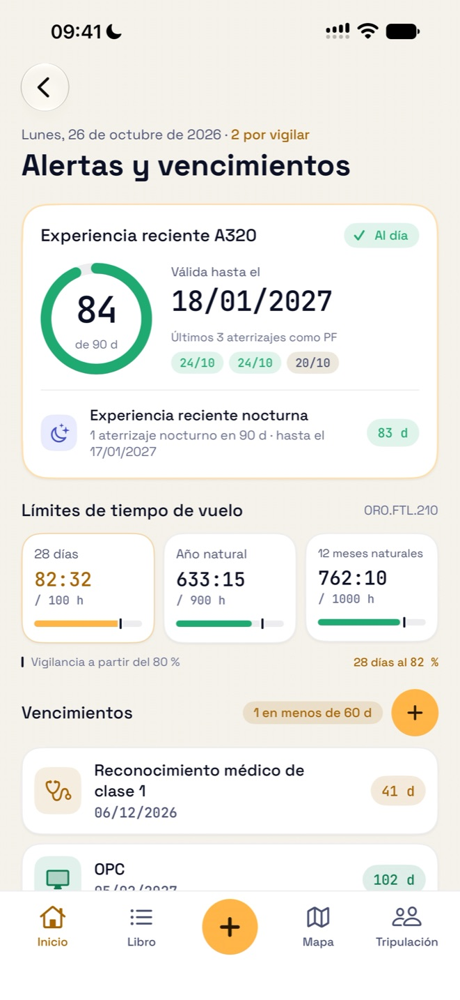

Gratis
0 € para sus primeros 50 vuelos
- Todas las funciones, importaciones incluidas
- Sin cuenta que crear
- Sin anuncios
Libro de vuelo EASA · AMC1 FCL.050
Todo vuelo termina con la recogida, el flare. Después, va a su libro de vuelo.
El libro de vuelo EASA para pilotos de línea aérea, pilotos privados y alumnos, en iPhone y iPad. El tiempo nocturno, los despegues y los aterrizajes se calculan por usted; la experiencia reciente, los límites de tiempo de vuelo y los vencimientos, siempre a la vista.
Gratis para sus primeros 50 vuelos · Sin cuenta · Sin anuncios
Flare lleva su libro de vuelo según el modelo que la EASA fija en el AMC1 FCL.050: las mismas columnas, los mismos totales, página tras página.
Flare no está certificada ni aprobada por la EASA, que no aprueba apps de libro de vuelo: sigue el formato del AMC1 FCL.050, y es su autoridad nacional quien acepta o no un libro de vuelo electrónico.
Todo lo que la EASA le pide anotar, sin las tareas tediosas.
Introduzca la ruta y las horas de calzos: el tiempo nocturno y los despegues y aterrizajes de día o de noche se calculan a partir de la posición del sol, según la definición EASA o su propia regla.
Las pistas de salida y la ciudad de llegada, en fotos reales. Los circuitos se dibujan sobre la pista real, los vuelos locales sobre el mapa, y las sesiones de simulador tienen la suya.
Fotografíe cada página en horizontal. Flare prueba su lectura antes de conservar la foto, aprende su letra con unas pocas casillas que usted confirma y muestra la casilla de su foto junto a cada valor dudoso. Todo se lee en su dispositivo.
Experiencia reciente FCL.060 por tipo de avión, límites de tiempo de vuelo ORO.FTL.210 y recordatorios antes de que venzan su reconocimiento médico, sus habilitaciones y sus controles.
Traiga su historial desde un archivo CSV o Excel, o desde un libro PDF en formato EASA. La app reconoce las columnas y comprueba los totales.
Importe su programación desde el calendario del iPhone o desde un archivo .ics: los vuelos ya realizados se añaden, listos para completar.
Un libro EASA listo para imprimir en PDF, A4 apaisado, y una exportación CSV de todos sus vuelos.
Todas sus rutas y aeropuertos en un mapa. La base de datos de aeropuertos está integrada en la app.
Un pasaporte de sus aeropuertos y países, un hangar de todos los aviones volados, su carrera paso a paso, sus récords y su año de vuelo, listos para compartir.
Las sesiones FSTD con su ejercicio (OPC, LPC, EBT…), examinador y función, en su propia columna: nunca cuentan como tiempo de vuelo.
Filtre su libro y vea los totales exactos de los vuelos mostrados.
Sume y reste tiempos en horas y minutos o en horas decimales, y lea el total de las dos formas.
Tiempo total, experiencia reciente y próximo vencimiento en la pantalla de inicio y la pantalla bloqueada; el globo del icono cuenta lo que requiere su atención.
Breves guías animadas muestran cada gesto en la app, en su idioma y en su tema de día o de noche.
Una sola app para iPhone y iPad, en español, inglés, francés, alemán e italiano.






Películas cortas de la app, tal como las muestra su Ayuda.
Empiece gratis. Sin anuncios.
0 € para sus primeros 50 vuelos
29,99 € al año
79,99 € una sola vez
Solo cuentan los vuelos: las sesiones de simulador y los posicionamientos no. Sin Pro, o una vez finalizada la suscripción, su libro sigue siendo consultable, modificable y exportable: solo añadir vuelos requiere Pro.
El pago y la renovación los gestiona Apple con su Cuenta de Apple. El precio se indica en euros; el App Store muestra el precio de su país.
Flare no tiene cuenta ni servidor. El desarrollador no recopila ningún dato personal.
Importación, programación, suscripción, iCloud: las respuestas están en la página de soporte.
Ir al soporte